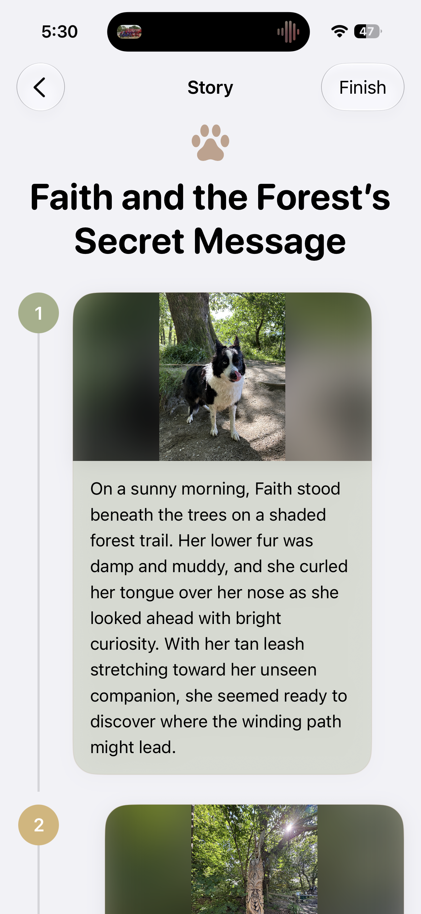

Featured Project
In Development
Paw Story
Turn your dog's everyday moments into stories.
An AI-assisted iOS app that transforms your dog's photos into personalised stories you can save and share. Paw Story is my main ongoing project, bringing together my experience in iOS development and my interest in building thoughtful, user-centred products.
Explore Paw Story